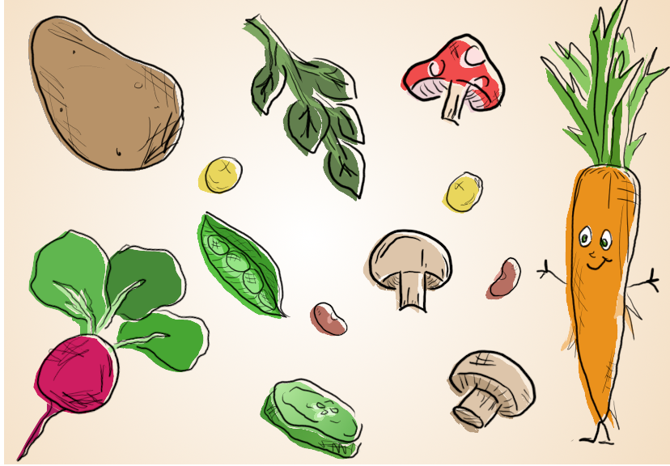

I had a lot of fun with this project and I'm very proud of the final product. I drew the outlines of each vegetable and organized them into different layers, then I selected them using mostly free select, but also with the path tool, and created a new layer called "colors" which has all the background colors of each plant. Then at the end, I transformed the colors layer a little bit down and to the left to add some depth and character to the drawing- that's why the outlines don't match the edge of the colors exactly. I like the effect because it makes everything pop out a little bit. Lastly, I used gradients on the background ot make it more interesting, and on the cucumber slice, as they are whiter in the center and I wanted to illustrate that.